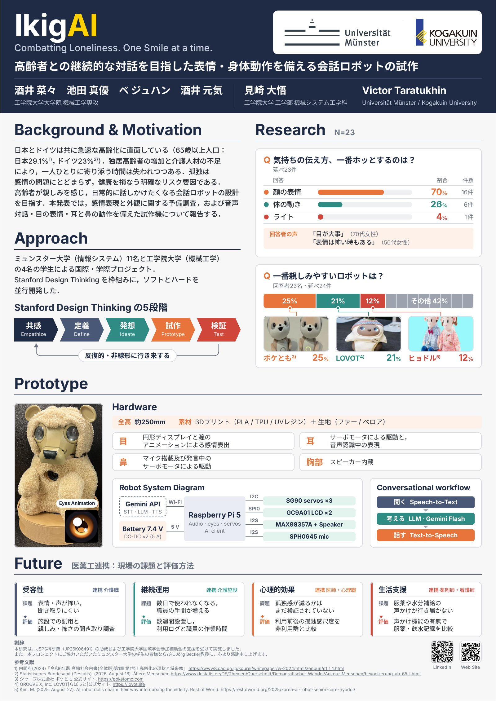

Every answer an AI gives rests on something it never said out loud. I build interfaces that surface those unstated premisesThis sentence assumes that unstated premises are recoverable at all — that an LLM's output carries recoverable traces of the reasoning that produced it. That assumption is what my research tests. and hand them back to the person, so they can argue with them.
I'm in Detroit, November 2–5, presenting TokenTangram at the poster session. Happy to talk about anything below — find me there or write to me.
TO ADD poster session number and time once the program is out.
Research
I work on human–AI interaction for people without domain expertise — the general users who have no way to check whether an AI is helping them or just agreeing with them. My goal is to make AI legible enough that using it well does not require already knowing the answer.
Three threads run through the work.
Telling personalization apart from sycophancy
When a model adapts to you, you cannot tell whether it fitted itself to your situation or simply to your opinion. I treat that indistinguishability as the core problem, and approach it by giving people a view of their own background knowledge and usage habits rather than by explaining the model.
Extracting implicit premises
An LLM response is an enthymeme: an argument with its warrant left out. I develop methods to recover those warrants — from the conversation log together with the user's own background — and represent them as objects a person can accept, reject, or rewrite.
Making the cost of vagueness visible
When an instruction is imprecise, someone pays for it, usually the person, in rework they did not anticipate. TokenTangram meters that cost visually at the moment the command is written.
Projects
TokenTangram
First author · concept, system, paper · with Daigo Misaki
Ask an AI vaguely and it still answers, by filling in what you left unsaid. You never see that work, and no one is billed for it. TokenTangram prices it: a user bar and an AI bar fill side by side as you work.
You can rephrase the command yourself or hand the rest to the model. The counts are measured; the accounting is ours. The meter prices a sentence by a stated rule rather than measuring ambiguity, and it is a probe, not a validated instrument.

Video figure, 4:15, captioned.
Implicit premise extraction
Master's thesis · in progress
The input is the conversation log plus the user's own background, since the log alone would have to cover far too wide a range of readers to say anything specific about any of them.
The motivation is over-reliance: before anyone can calibrate trust in a model, they need a view of what they themselves already know and how they tend to use it.
Argument as an interaction technique
System design · prototype
The model resists, updates its stance with stated reasons, and leaves behind a map of the assumptions that survived the exchange.
Built on Walton's argumentation schemes and Toulmin's warrant-gap framework, with the model's stance governed by explicit condition–trigger rules and critical questions bound to curated per-scheme banks, rather than free generation.
IkigAI
Japan–Germany joint PBL with the University of Münster · circuits, firmware, behaviour, coordination
Japan and Germany are ageing at the same time — 29.1% and 23% over sixty-five — and as people live alone and care staff run short, the time anyone gets to sit with one person is disappearing. Loneliness is not only a feeling; it is a measurable risk to health. Eleven students in Münster from information systems, four of us in Tokyo from mechanical engineering, working through Stanford's design thinking cycle with software and hardware developed in parallel. The Japanese team took everything except the frame, and I ran the English-language coordination between the two sides, in person and online.
We asked 23 people what makes them feel someone is actually listening. Seventy percent said facial expression, against 26% for body movement. A woman in her seventies put it simply: the eyes matter. A woman in her fifties added the warning we kept returning to — an expression can also be frightening. So IkigAI is 250mm of 3D-printed PLA, TPU and resin under fur and velour, with circular displays for eyes and animated pupils doing the emotional work, servos in the ears that move while it is listening, a microphone in the nose, and a speaker in the chest.
The interesting part was not the software. We started on an M5Stack CoreS3 and the two circular displays would not behave; chasing it down to SPI signal integrity meant moving the whole platform to a Raspberry Pi 5 mid-project. Then the audio amplifier began dying, repeatedly. It turned out the servos were dumping back-EMF into the rail every time the robot moved its head — the robot was, in effect, breaking its own voice every time it tried to express something. Fixing that meant rethinking the power rail, and replacing the Dupont wiring with proper JST-XH connectors so the thing could survive being handled by someone who is not an engineer.
After the presentation in Münster I brought the robot back and showed it in Japan, as a poster at the 12th Medicine–Pharmacy–Engineering Three-University Symposium in October 2026, one of 58 posters across the three universities. It was the first time the robot stood in front of clinicians and pharmacists instead of engineers — the people who actually know the ones it is being built for, and who can say what a loneliness scale would have to show before any of this counts.


Poster, October 2026. With Nana Sakai, Mayu Ikeda, Genki Sakai, Daigo Misaki and Victor Taratukhin (Münster / Kogakuin).
Idea Clay
Second author · with Yuya Aikawa and Daigo Misaki
Ideas and elements sit on a canvas as fragments the user merges, tears apart, prunes, or swaps — five operations that invoke the model without ever asking for a written command.
The design follows Finke's Geneplore model, cycling between generating preinventive structures and exploring them, with Schumpeter's new combination underneath. A study with 12 participants found the metaphor made generation and exploration more intuitive than typing commands, which breaks the momentum divergent thinking depends on.

Publications
-
UIST2026
Joohan Bae, Daigo Misaki · Poster, UIST 2026 Adjunct Proceedings
-
UIST2025
Clay Play: A Metaphorical LLM Interface for Dynamic Idea Generation and Exploration
Yuya Aikawa, Joohan Bae, Daigo Misaki · Poster, UIST 2025 Adjunct Proceedings, Busan
Background
Master's student in mechanical engineering at Kogakuin University, in the Misaki Laboratory, supervised by Daigo Misaki and Masa Ogawa. I came to HCI through building things: as an undergraduate I led the programming team of the Kogakuin Robot Project, writing control software for competition robots.
That route still shapes how I work. The interface research and the hardware are the same practice for me — I would rather ship a probe that fails informatively than argue from a diagram. I grew up in Korea, went to high school and university in Japan, and work in Korean, Japanese, and English.
Contact
I am applying to PhD programs for Fall 2027 entry, looking for advisors working on explanation, reflection, and reasoning support in human–AI interaction. If that is near your work, I would be glad to talk.